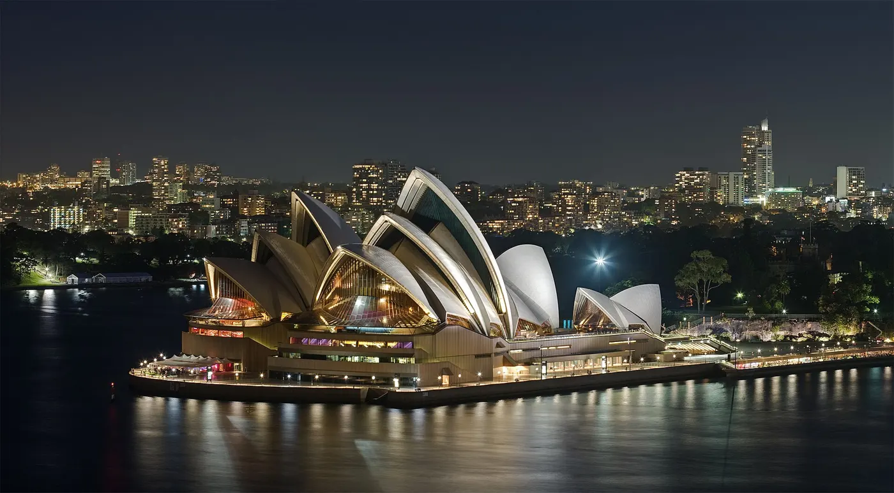
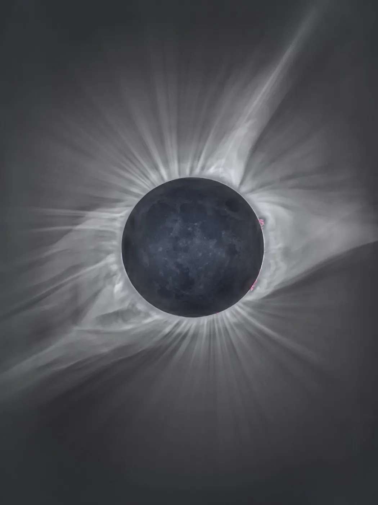
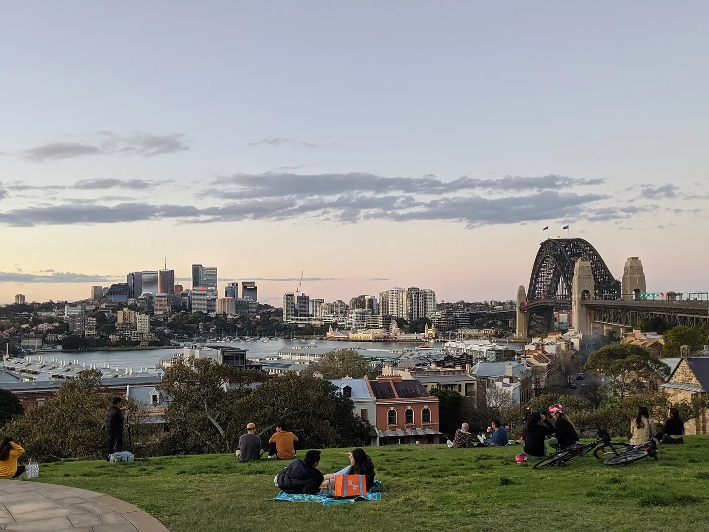
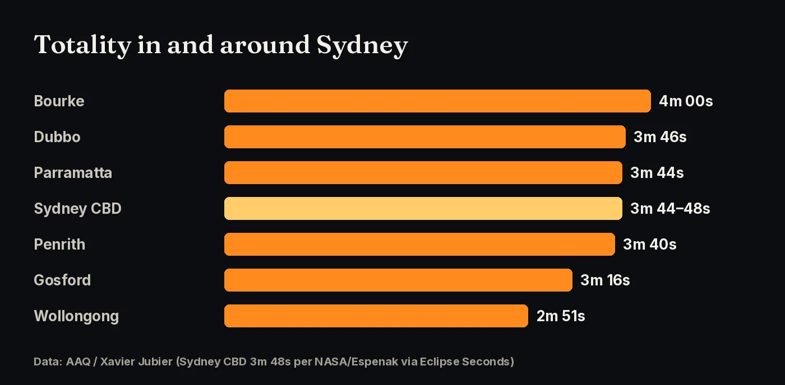

For the first time since 1857, the Moon’s shadow crosses Sydney. Totality begins at about 1:59 pm AEST and lasts 3 minutes 48 seconds.
until totality over Sydney, 22 July 2028 at 1:59 pm AEST

All times below are AEST (UTC+10) for central Sydney on Saturday 22 July 2028. During totality the Sun will be about 29° above the north-north-west horizon.
| Phase | Time (AEST) | What you’ll see |
|---|---|---|
| Partial eclipse begins (C1) | 12:40:46 pm | The Moon starts covering the Sun. Put your glasses on. |
| Totality begins (C2) | 1:59:37 pm | Diamond ring, then darkness. Glasses off once totality is complete. |
| Maximum eclipse | 2:01:31 pm | The corona, planets and bright stars appear in the middle of the day. |
| Totality ends (C3) | 2:03:25 pm | Second diamond ring. Glasses back on. |
| Partial eclipse ends (C4) | 3:14:43 pm | The Moon moves off the Sun. |

Sources: timeanddate.com (begins 12:40 pm, max 2:01 pm, ends 3:14 pm, totality 3 m 49 s). Contact times are from NASA/Espenak elements via Eclipse Seconds, cross-checked with AAQ (Xavier Jubier data). Published sources differ by a few seconds.
Greater Sydney is inside the path of totality, but close to its southern edge. Totality gets longer to the north-west and shorter to the south: Wollongong has only about 2 m 51 s. Wherever you watch from, you need a clear, low view to the north-north-west.


Sources: AAQ (Xavier Jubier data); Eclipse Seconds (NASA/Espenak elements).
Sydney is in winter in July, with mild afternoons. Since 2000, 22 July in Sydney has been cloudy about 43% of the time. AAQ, using Jay Anderson’s satellite cloud climatology, notes that cloud cover increases toward the east coast and is lowest in north-western Australia. Have a plan B: inland NSW along the path, through Dubbo and Bourke, gives you a chance of clearer skies and longer totality. Look at the forecast 2–3 days ahead and be ready to drive.
Sources: timeanddate.com (cloud history); AAQ (Xavier Jubier data).
Eclipse glasses for every partial phase. Use ISO 12312-2 certified eclipse glasses or a solar viewer from 12:40 pm until totality, and again after 2:03 pm. Sunglasses are never safe. Cameras and binoculars need their own certified solar filters.
Glasses off only during totality. Take them off once the last bright beads of sunlight have gone. Put them back on as soon as the diamond ring appears.
Sources: AAQ (Xavier Jubier data)
22 July 2028 is a Saturday, so book accommodation early. On the day, take trains, ferries or light rail to the harbour instead of driving, and be in position before 12:40 pm. Most international visitors need an eVisitor or ETA. Check the Department of Home Affairs website for your passport.
Click any point on the path map for exact totality times, and vote for where the community gathers.